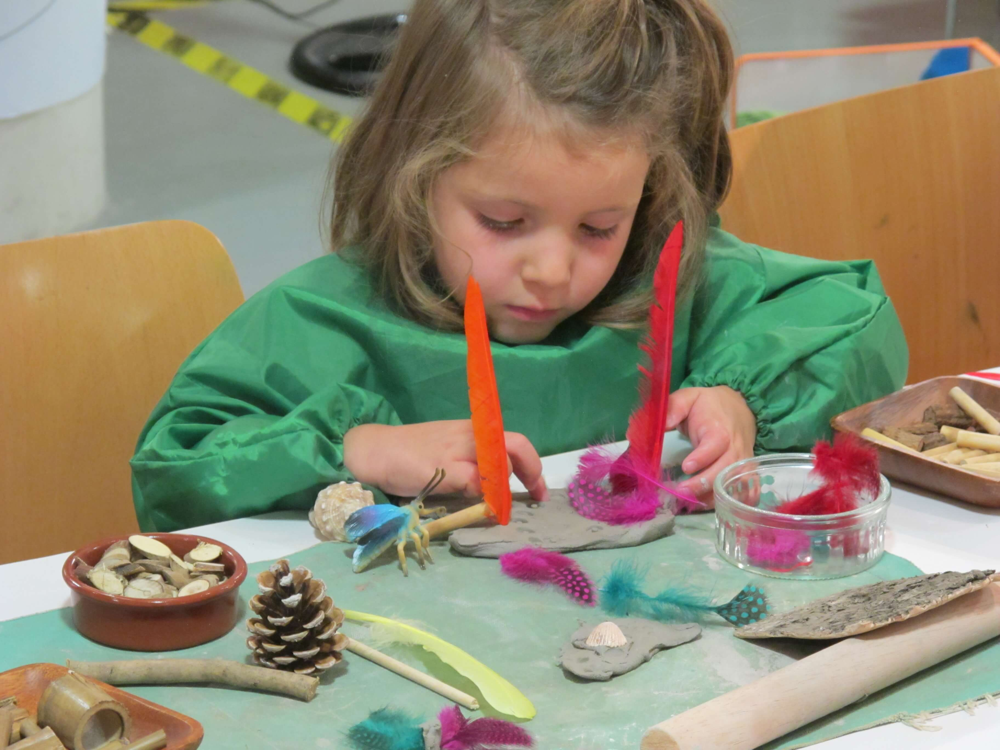
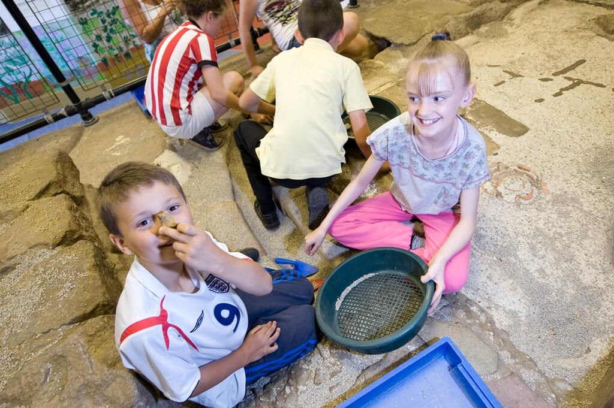
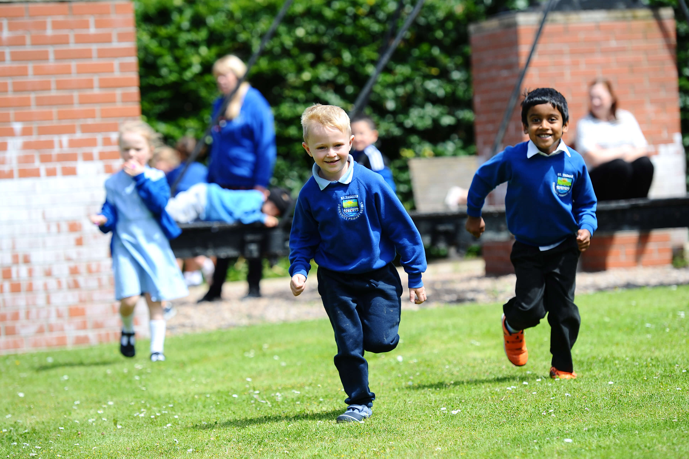

What We Do: Bridging Worlds
At MPSM, we don’t just visit museums; we inhabit them. Our work transforms galleries into classrooms and artefacts into teachers.
Join Our Mission Download OverviewResearch & Evaluation
We champion evidence-based approaches by conducting rigorous, multi-disciplinary research into the cognitive and emotional impacts of museum-based learning. Our studies focus on long-term retention, social-emotional development, and the unique pedagogical shifts that occur when students interact with physical artifacts.
By partnering with leading academic institutions, we translate complex findings into actionable data for policymakers. This ensures that the 'Museum School' model is recognised not just as an enrichment activity, but as a viable, transformative educational framework for the 21st century.

Museum–School Partnerships
Sustainable change requires deep collaboration. We facilitate long-term residencies where primary school classes relocate to a museum for weeks at a time. This immersive approach allows the curriculum to be woven directly through the museum's collections, making history, science, and art tangibly real.
Our partnerships framework provides the structural support needed for both institutions to succeed. We handle the logistical heavy lifting, from risk assessments to teacher training, allowing educators and curators to fous on what matters most: creating unforgettable learning journeys for every child.
Download Our Partnership Planning Flowchart
International Collaboration
Cultural heritage is a global asset. Our international network connects museum-school practitioners from Newcastle to Hamburg, Bergen to Dundee, and beyond. We host regular virtual symposiums and virtual exchanges that allow schools to share projects and perspectives across borders.
Through these collaborations, we identify universal best practices while respecting local cultural nuances. Our work proves that while the artifacts may change, the power of object-based learning to inspire curiosity is a universal human experience that transcends geography.
Explore Our Projects
Guidance & Practice
We believe in empowering the entire ecosystem. Our 'Guidance & Practice' initiative provides open-access toolkits, digital resouces, and professional development for teachers and museum professionals. These resources simplify the complexities of hosting full-time school groups.
From curriculum mapping templates to 'museum-ready' pedagogical techniques, we provide the practical tools needed to turn inspiration into reality. Our goal is to lower the barrier to entry, making museum-based education accessible to every school, regardeless of their prior experience or resources.
Explore Our Publications
Ready to see our work in action?
Explore the real-world impact of our museum-school partnerships through our international projects gallery.
View All Projects